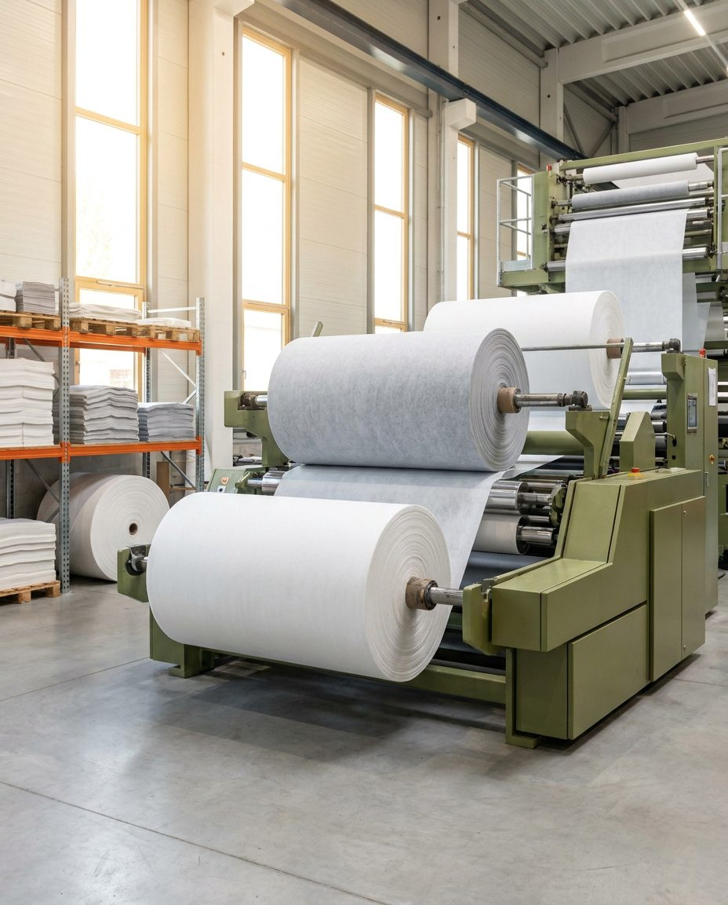

Tehnički tekstil za filtraciju, transport i industriju.
Konus Konex je jedan od vodećih proizvođača tehničkih netkanih i tkanih tekstilnih materijala za industriju i domaćinstvo — i vodeći proizvođač specijalnih inženjerskih transportnih traka.

Pet programa, jedan standard kvaliteta.
Za svaki program pripremamo tehničke specifikacije i ponudu za vašu primenu.
Industrijska filtracija
Filtracijski mediji, filter vreće i elementi za vazduh i tečnosti.
ProgramČišćenje
Tehnički materijali za profesionalno i industrijsko čišćenje.
ProgramSintetička koža
Netkani nosači za sintetičku kožu visokog kvaliteta.
ProgramTransportne trake i prenos snage
Inženjerske transportne i pogonske trake po meri.
ProgramPodstave i tehnički tekstilni laminati
Laminati za automobilsku, obućarsku i tekstilnu industriju.
ProgramPouzdan industrijski partner.
Sopstveni razvoj i proizvodnja
Materijale razvijamo i proizvodimo u sopstvenim pogonima, uz kontrolu kvaliteta u svakom koraku.
Inženjersko znanje
Rešenja projektovana i prilagođena tačno određenoj primeni i radnim uslovima.
Tradicija od 1894
Više od jednog veka iskustva u proizvodnji tehničkog tekstila i izvoz na 85% tržišta.
Sertifikovan kvalitet
Poslujemo u skladu sa ISO 9001, ISO 14001, IATF 16949 i OEKO-TEX standardima.
Sertifikovano. Dokazivo. Sledljivo.
Naši procesi i materijali usklađeni su sa međunarodnim standardima kvaliteta i upravljanja životnom sredinom. Sertifikate i dokumentaciju dostavljamo na zahtev.
Svi sertifikati
Vrednost za kupce, odgovornost prema okolini.
Želimo da budemo vodeća i prepoznatljiva kompanija za najzahtevnije kupce. Dodatnu vrednost stvaramo kroz inovacije, kreativnost, fleksibilnost i dogovoreni kvalitet proizvoda.
Potrebna vam je tehnička ponuda?
Pošaljite upit sa opisom primene i zahteva — pripremamo predlog materijala i ponudu.